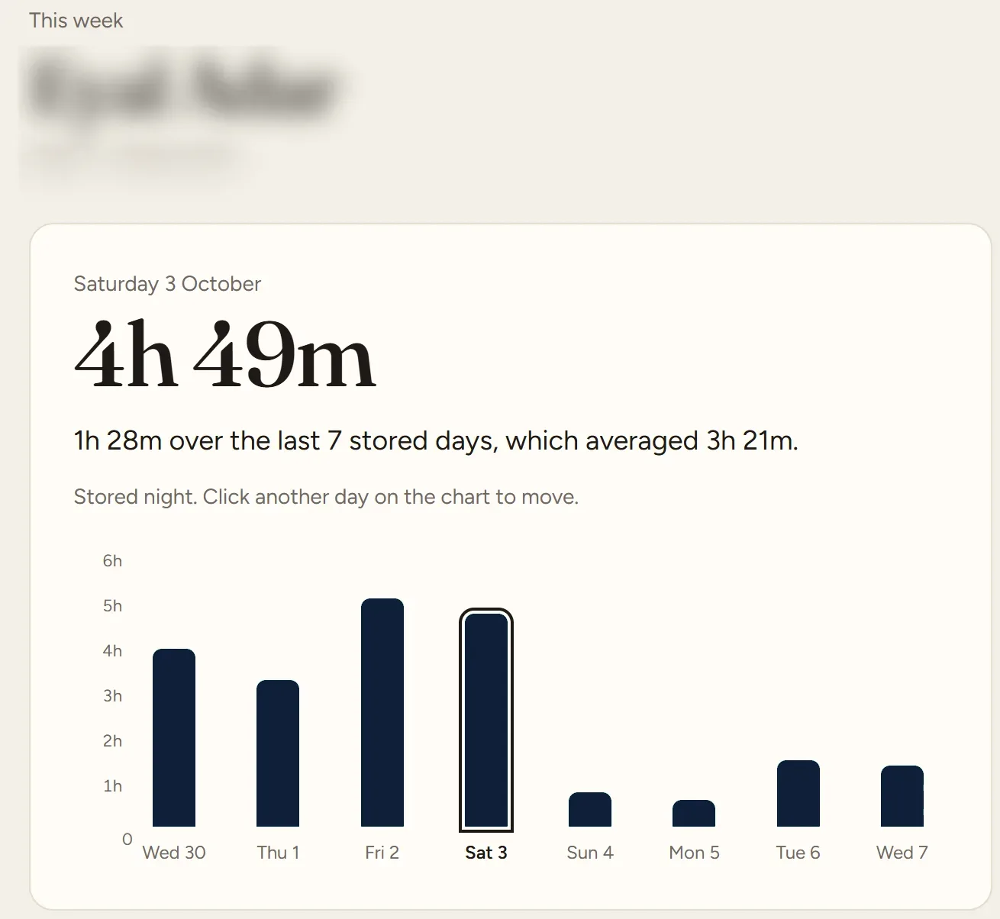
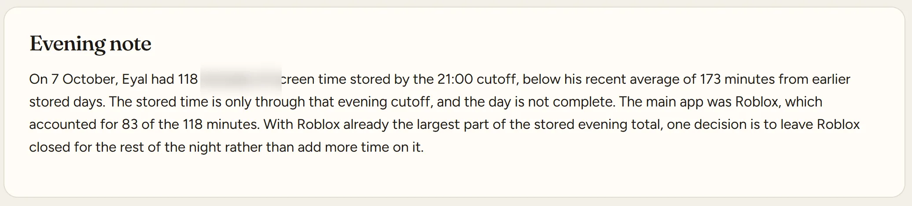
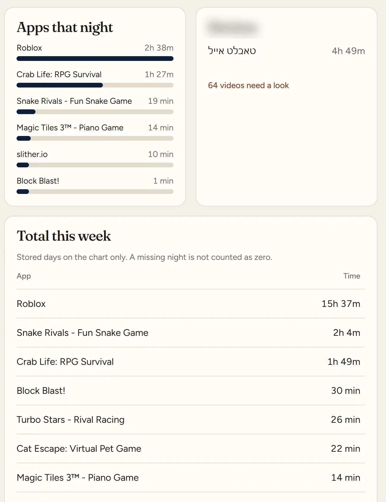
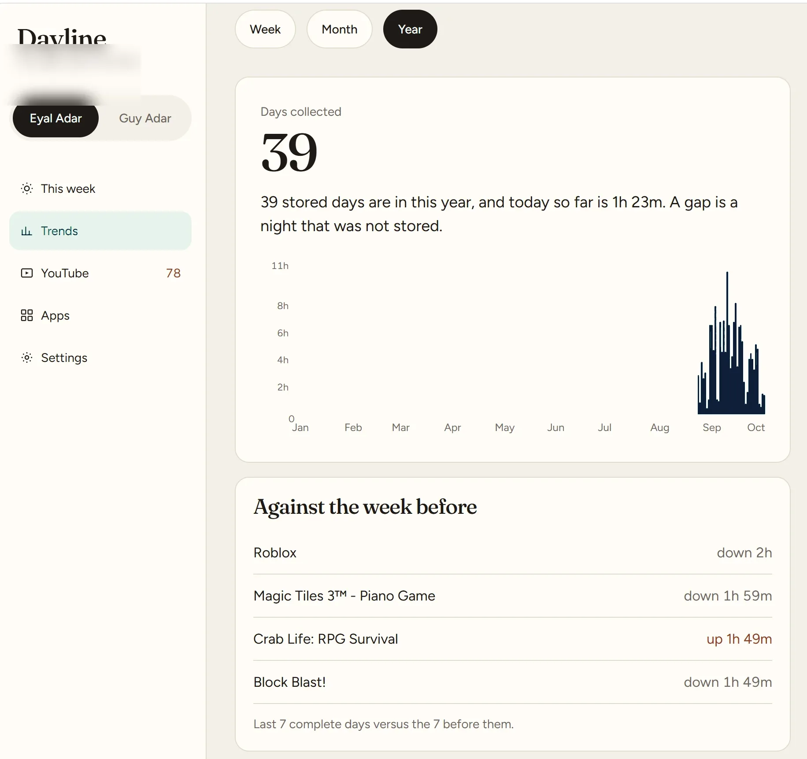
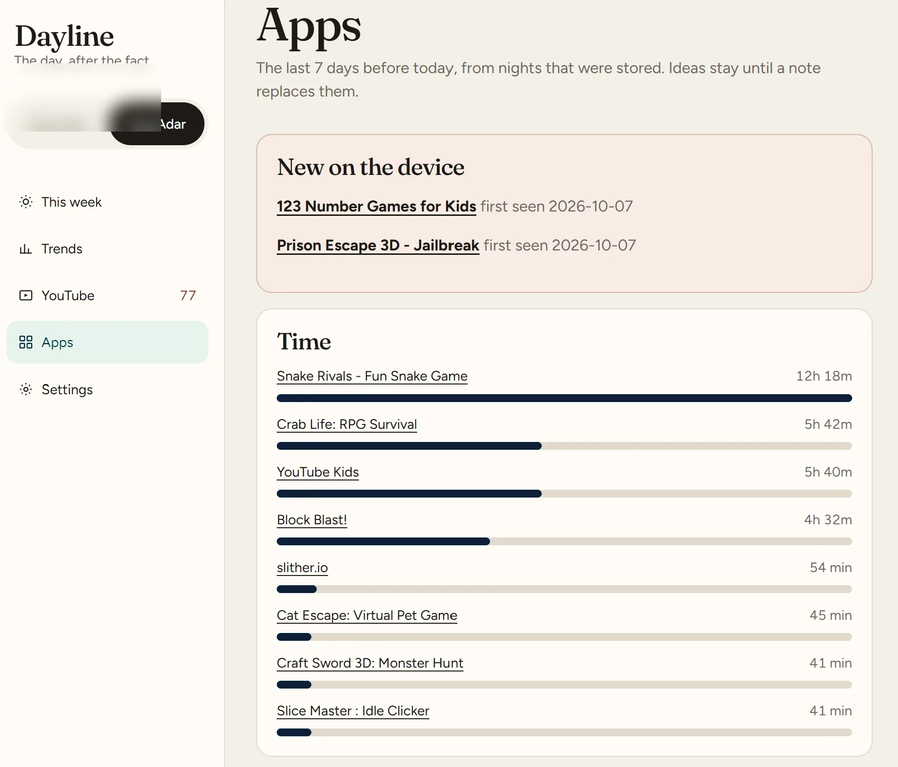
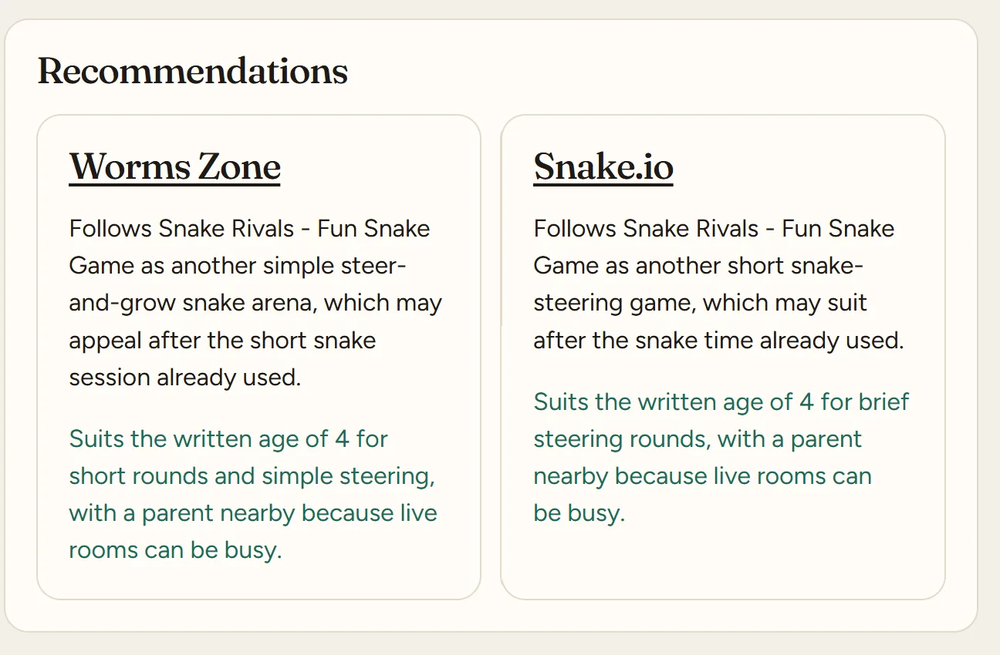
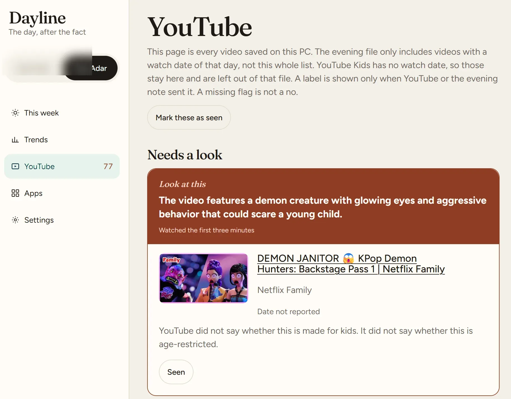

Automation case study
Dayline
The day, after the fact. Family Link and YouTube come in overnight, the apps and videos are read, and an evening note says what changed.
Stored nightsA gap is a night that was not stored
Evening pipelineSTORED
Family LinkDevices
→
YouTubeVideos
→
GeminiJudge
→
GrokNote
✓
Evening note readyCutoff time is stated. The day is not called complete.
Missing flagNot a no
The problem
The day is split across two places.
Family Link has the time and the apps. YouTube has the videos, and YouTube Kids does not report a watch date. A new app, or a video that needs a look, is easy to miss if those stay in two tabs.
- Family Link
- →
- YouTube
- →
- Compare days
- →
- Missed video
The solution
One evening. Both sources.
Family Link and YouTube are connected once. Each night the pull stores what it got. Videos are judged through the day. Grok writes the evening note and the app recommendations.
01 This week
The stored night, against the days already kept.
Each child has a week chart. A selected day shows the total, how it sits against the last stored days, and which apps made up that night. A missing night is not counted as zero.
- Day total against the average of stored days
- Apps that night, and the device that held the time
- Week table uses stored days only
- Grok writes the evening note from the cutoff, not from a finished day



02 Trends
A gap is a night that was not stored.
Week, month, and year. The year chart only rises where a night was kept. The comparison under it is the last 7 complete days against the 7 before them, per app.
- Days collected, with today called out as incomplete
- Empty months are missing nights, not zero-use months
- App deltas against the week before

03 Apps
New on the device, the day it shows up.
The last 7 days before today, from nights that were stored. A first-seen app stays in the list until a later note replaces it. Grok suggests follow-on apps from what was already used, and says why.
- Time by app for the stored week
- First-seen date on anything new
- Recommendations stay until a note replaces them
- Grok writes the app ideas. Gemini does not.


04 YouTube
A missing flag is not a no.
This page is every video saved on this PC. The evening file only includes videos with a watch date of that day. YouTube Kids has no watch date, so those stay on the page and stay out of that file. Gemini judges through the day. A label is shown only when YouTube or the evening note sent it.
- Fine, needs a look, or unsuitable
- Unsuitable and needs-a-look include why, for that age
- YouTube's own made-for-kids and age-restriction flags, when it sent them
- Mark as seen stays on this page

Technologies
Python
FastAPI
HTML
Jinja
Gemini API
Grok API
Google Family Link
YouTube
Key takeaways
- Both sources land in one evening read.
- A missing night is not stored as zero.
- Gemini judges the videos and has to say why.
- Grok writes the evening note and the app recommendations.
- The UI is plain HTML. FastAPI fills the numbers with Jinja. No JavaScript framework.
Let’s Connect
I’m always open to interesting projects, collaboration, or new opportunities.